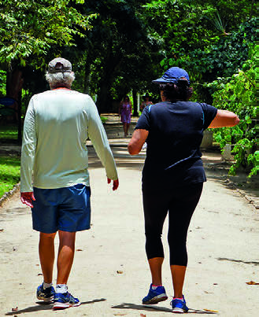

O TEMPO
PRATICAR ATIVIDADES FÍSICAS, CONVERSAR COM AMIGOS, ASSISTIR A UM FILME SÃO BONS EXEMPLOS DE COMO PODEMOS INCLUIR MOMENTOS DE AUTOCUIDADO EM NOSSO DIA A DIA.
• COM QUE FREQUÊNCIA VOCÊ SE DEDICA AO LAZER?
2) REÚNA-SE COM TRÊS OU QUATRO COLEGAS PARA ORGANIZAR OS DADOS RESPONDIDOS POR VOCÊS COM A ORIENTAÇÃO DO PROFESSOR.
OS RESULTADOS PODEM SER REPRESENTADOS EM TABELAS E COMPARTILHADOS COM O RESTANTE DA TURMA. Resposta pessoal.
CONSIDERANDO QUE 1 HORA EQUIVALE A 60 MINUTOS, OBSERVE O TEMPO MÉDIO DE DURAÇÃO DAS ATIVIDADES A SEGUIR E DEPOIS RESPONDA:
ASSISTIR A UM FILME: 90 MINUTOS.
Vergani Fotografia/Shutterstock
BATER PAPO NO INTERVALO: 20 MINUTOS.
niksdope/Shutterstock

FAZER UMA CAMINHADA: 45 MINUTOS.
Wagner Campelo/Shutterstock
OUVIR UMA MÚSICA: 5 MINUTOS.
Krakenimages.com/Shutterstock
A) QUAL DESSAS ATIVIDADES DURA MAIS DE UMA HORA?
Assistir a um filme.
B) FAZER UMA CAMINHADA DURA MAIS OU MENOS DO QUE UMA HORA?
Menos.
Ao realizar a atividade 2, como sugestão de possibilidade de ampliar a conversa sobre o tema, introduza o debate sobre a importância e os objetivos das pesquisas que envolvem os órgãos públicos, como levantamento de ações e elaborações de políticas públicas.
Leia em voz alta, com os estudantes, o tópico “O tempo”.
Retome o debate sobre as atividades diárias e, juntos, pensem em como incluir momentos de lazer à rotina de cada um.
Ressalte que mudanças como uma caminhada de 30 minutos por dia podem trazer grandes benefícios para a saúde e que a gestão do tempo é fundamental para garantir uma rotina que contemple atividades físicas diárias.
Convide os estudantes a analisar as imagens e o tempo destinado a cada uma delas, procurando saber quais daquelas atividades eles realizam ou gostariam de realizar com o objetivo de melhorar a qualidade de vida e saber se o tempo indicado nas imagens é o que eles praticam.
Uma possibilidade de ampliação dos itens a) e b) realizados após o tópico “O tempo” é solicitar aos estudantes que descrevam boas práticas para a saúde que:
- • Levam mais de 1 hora: passear de bicicleta no parque.
- • Levam, em média, 30 minutos: cuidar das plantas do jardim.
- • Levam menos de 10 minutos: fazer uma oração.